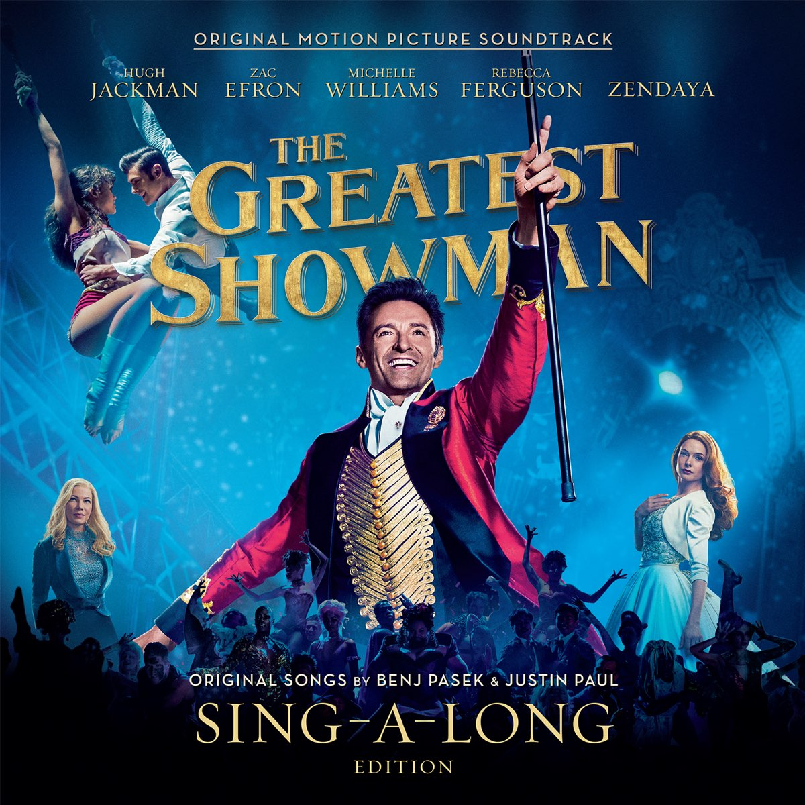

The Greatest Showman: Original Motion Picture Soundtrack is the soundtrack album to the film The Greatest Showman. It was released in full on December 8, 2017, by Atlantic Records.[1] The album contains all of the film's musical numbers, but none of the film's underscore. The first pre-order release was on October 26, 2017, with two promotional singles: "The Greatest Show" and "This Is Me". A third, "Rewrite the Stars", followed on November 17, 2017.[2][3][4] "This Is Me" was released on December 8, 2017, as the album's official lead single.[5] In Australia, "Rewrite the Stars" was released to radio on July 20, 2018.[6]
